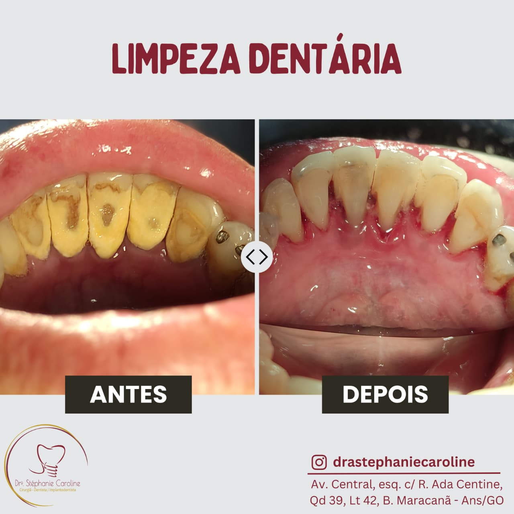

O seu sorriso,
na sua melhor versão.
Lentes de contato, facetas, clareamento e design do sorriso — tratamentos pensados para realçar a sua beleza natural, com naturalidade e harmonia.

Tratamentos para cada objetivo.
Lentes de contato
Lâminas finíssimas que renovam o formato e a cor dos dentes, com aparência natural.
Facetas
Em porcelana ou resina, corrigem cor, forma e pequenos desalinhamentos.
Clareamento
Dentes mais claros de forma segura, com acompanhamento profissional.
Design do sorriso
Planejamento personalizado que desenha o sorriso ideal para o seu rosto.
Harmonização
Procedimentos que equilibram o conjunto do sorriso e da face.
Prótese estética
Reposição de dentes com resultado bonito e funcional, assinada pela Dra. Ester.
Do planejamento
ao novo sorriso.
Avaliação
Entendemos seus desejos e analisamos o seu sorriso em detalhe.
Planejamento
Desenhamos o resultado e alinhamos expectativas com você.
Execução
Realizamos o tratamento com cuidado e atenção a cada detalhe.
Acompanhamento
Cuidamos da manutenção para o seu sorriso durar.
Planejamento para um sorriso natural.
Usamos imagens de antes e depois com cuidado, apenas como referência visual. Na avaliação, a Dra. Ester define o que faz sentido para o seu rosto, sua saúde bucal e suas expectativas.
Dra. Ester Rocha
Estética & Prótese
CRO-GO 2071
A matriarca da elloRocha é referência em estética e prótese. Com décadas de experiência, conduz cada caso com sensibilidade artística e técnica apurada, buscando sempre o resultado mais natural.
Sobre estética dental.
Quando bem indicada e executada, o desgaste é mínimo ou inexistente. Na avaliação, explicamos a melhor opção para o seu caso, sempre priorizando a saúde do seu dente.
Pode haver sensibilidade temporária em alguns casos. Por isso o acompanhamento profissional é importante: ajustamos o protocolo para o seu conforto.
Sim. No design do sorriso planejamos o resultado junto com você, alinhando expectativas antes de iniciar o tratamento.
Pronto para realçar o seu sorriso?
Agende uma avaliação e descubra o tratamento ideal para você.